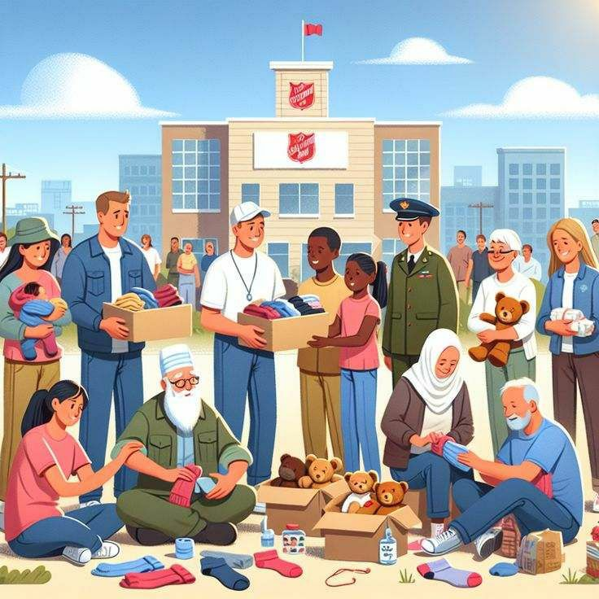
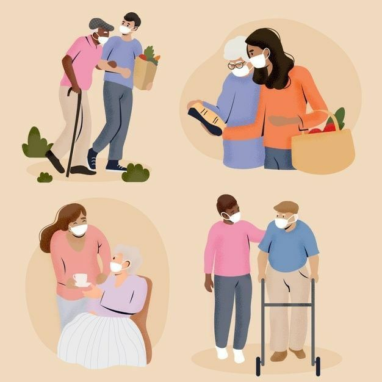

نسبة الحوكمة
91%
متوسط درجات حوكمة الجمعيات الشريكة وفق معايير الشفافية والمساءلة في العمل الإنساني داخل سوريا.
الجمعيات الشريكة في سوريا
13 منطقة

جمعية الإحسان الخيرية
خدمات طبية وإغاثية
12,500
مستفيد
دمشق

مؤسسة العطاء للإغاثة
دعم الأيتام والأسر المتعففة
8,200
مستفيد
حلب
جمعية ساعد للتنمية
مشاريع تنموية وتعليمية
4,150
مستفيد
ريف دمشق